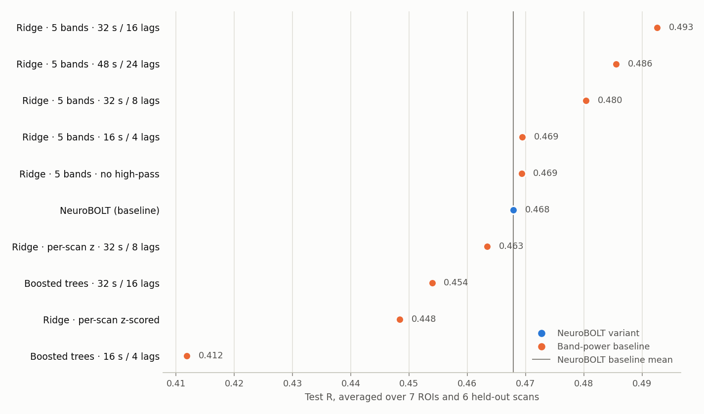
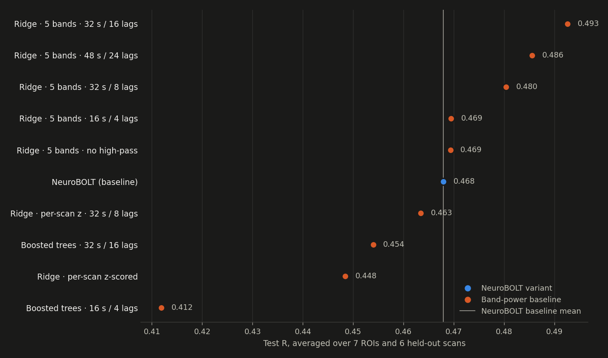

<title>NeuroBOLT Hypothesis Tests</title>
<link rel="preconnect" href="https://fonts.googleapis.com">
<link rel="preconnect" href="https://fonts.gstatic.com" crossorigin>
<link rel="stylesheet" href="https://fonts.googleapis.com/css2?family=IBM+Plex+Mono:wght@400;500&family=IBM+Plex+Sans:wght@400;500;600&family=Source+Serif+4:ital,opsz,wght@0,8..60,400;0,8..60,600;1,8..60,400&display=swap">
<style>
/* Layout: one reading column for prose; the results table and chart break out wider. Same system as NeuroBOLT Reproduction. */
:root {
  --bg: #f5f6f8; --plate: #fcfcfb; --fg: #15181d; --muted: #5a616d; --rule: #dde1e7; --row: #eceff3;
  --neural: #2a78d6; --linear: #eb6834;
  --font-head: "IBM Plex Sans", "Segoe UI", system-ui, sans-serif;
  --font-body: "Source Serif 4", Georgia, "Times New Roman", serif;
  --font-mono: "IBM Plex Mono", ui-monospace, Consolas, monospace;
  --measure: 42rem; --wide: 76rem;
}
@media (prefers-color-scheme: dark) {
  :root:not([data-theme="light"]) {
    --bg: #101215; --plate: #1a1a19; --fg: #e8eaed; --muted: #a3aab5; --rule: #2b3038; --row: #1b1e23;
    --neural: #3987e5; --linear: #d95926; color-scheme: dark;
  }
}
:root[data-theme="dark"] {
  --bg: #101215; --plate: #1a1a19; --fg: #e8eaed; --muted: #a3aab5; --rule: #2b3038; --row: #1b1e23;
  --neural: #3987e5; --linear: #d95926; color-scheme: dark;
}
body { background: var(--bg); color: var(--fg); font-family: var(--font-body); font-size: 1.0625rem; line-height: 1.6; }
.page { padding-inline: 16px; padding-block: 2.5rem 4rem; display: grid; gap: 2.5rem; justify-items: center; }
.col, .wide { width: 100%; min-width: 0; display: grid; gap: 1rem; }
.col { max-width: var(--measure); }
.wide { max-width: var(--wide); }
h1, h2, h3, .eyebrow, th, figcaption, .note, .status { font-family: var(--font-head); }
h1 { font-size: clamp(2rem, 5vw, 2.75rem); line-height: 1.1; font-weight: 600; letter-spacing: -0.01em; margin: 0; text-wrap: balance; }
h2 { font-size: 1.45rem; font-weight: 600; margin: 0; padding-top: 0.5rem; border-top: 1px solid var(--rule); text-wrap: balance; }
h3 { font-size: 1.1rem; font-weight: 600; margin: 0.75rem 0 0; text-wrap: balance; }
p, ul { margin: 0; }
ul { padding-left: 1.25rem; display: grid; gap: 0.5rem; }
.eyebrow { font-size: 0.78rem; font-weight: 500; text-transform: uppercase; letter-spacing: 0.08em; color: var(--muted); }
.standfirst { font-size: 1.2rem; color: var(--muted); }
.status { font-size: 0.9rem; padding: 0.6rem 0.9rem; border: 1px solid var(--rule); border-radius: 6px; background: var(--plate); }
code { font-family: var(--font-mono); font-size: 0.88em; }
a { color: var(--neural); text-underline-offset: 2px; }
a:focus-visible { outline: 2px solid var(--neural); outline-offset: 2px; }
.table-wrap { overflow-x: auto; border: 1px solid var(--rule); border-radius: 6px; background: var(--plate); }
table { border-collapse: collapse; width: 100%; font-family: var(--font-head); font-size: 0.84rem; font-variant-numeric: tabular-nums; }
th, td { padding: 0.45rem 0.65rem; text-align: right; white-space: nowrap; border-bottom: 1px solid var(--rule); }
th { font-weight: 600; color: var(--muted); font-size: 0.76rem; }
th.left, td.left { text-align: left; }
tbody tr:last-child td { border-bottom: none; }
tr.base td { background: var(--row); font-weight: 500; }
tr.partial td { color: var(--muted); }
.ci { color: var(--muted); }
.swatch { display: inline-block; width: 0.6rem; height: 0.6rem; border-radius: 50%; margin-right: 0.45rem; vertical-align: 0.05rem; }
.swatch.neural, .swatch.base { background: var(--neural); }
.swatch.linear { background: var(--linear); }
figure { margin: 0; display: grid; gap: 0.6rem; }
figure .plate { background: var(--plate); border: 1px solid var(--rule); border-radius: 6px; padding: 0.5rem; justify-self: center; max-width: 60rem; width: 100%; }
figure img { display: block; width: 100%; height: auto; max-width: 100%; }
.fig-dark { display: none !important; }
@media (prefers-color-scheme: dark) {
  :root:not([data-theme="light"]) .fig-light { display: none !important; }
  :root:not([data-theme="light"]) .fig-dark { display: block !important; }
}
:root[data-theme="dark"] .fig-light { display: none !important; }
:root[data-theme="dark"] .fig-dark { display: block !important; }
figcaption, .note { font-size: 0.86rem; color: var(--muted); line-height: 1.5; }
footer { border-top: 1px solid var(--rule); padding-top: 1rem; }
</style>

<main class="page">
  <header class="col">
    <span class="eyebrow">Living results · inter-subject prediction</span>
    <h1>NeuroBOLT Hypothesis Tests</h1>
    <p class="standfirst">Which changes make NeuroBOLT predict BOLD better in people it has never seen? Each arm changes one thing, trains on the authors' split and is scored on the same six held-out scans.</p>
    <p class="status">{{STATUS}}</p>
  </header>

  <section class="wide" aria-labelledby="results">
    <div class="col" style="justify-self:center"><h2 id="results">Results</h2>
    <p>Mean test R per region on the six held-out scans (averaged over seeds for NeuroBOLT arms), scored on the frames every arm shares. Greyed rows are still running.</p></div>
    <figure>
      <div class="plate">
        
        
      </div>
      <figcaption>Blue: NeuroBOLT variants. Orange: band-power baselines. Small dots are single seeds; the line marks the NeuroBOLT baseline.</figcaption>
    </figure>
    <div class="table-wrap"><table>{{TABLE}}</table></div>
    <p class="note">Δ is paired by region and held-out scan; its 95% CI is a t-interval over the six held-out scans (five people), so differences under about 0.02 are hard to tell apart from noise. Decisions use the validation column first.</p>
  </section>

  <section class="col" aria-labelledby="findings">
    <h2 id="findings">Findings so far</h2>
    {{FINDINGS}}
  </section>

  <section class="col" aria-labelledby="protocol">
    <h2 id="protocol">How the arms are run</h2>
    <ul>
      <li><strong>Split.</strong> The authors' fold: 18 training scans (13 people), 5 validation scans, 6 held-out test scans (5 people).</li>
      <li><strong>NeuroBOLT arms.</strong> Seven separate models (one per region) for each of seeds 12345, 1 and 2, trained as in the paper for up to 30 epochs and stopped after 10 epochs without a new validation-MSE minimum. Each is scored at its minimum-validation-MSE epoch.</li>
      <li><strong>Band-power baselines.</strong> Log power per EEG channel in consecutive slices of the history window (the "lags"), in five classic bands or 1 Hz bins. Ridge regression or boosted trees, with the penalty or tree settings chosen on validation MSE.</li>
      <li><strong>Common frames.</strong> Longer EEG histories drop a few frames at each scan's start, so every arm is rescored on the last frames all arms share.</li>
    </ul>
    <footer class="note">Companion page: <a href="https://claude.ai/artifact/SZerzG3z2x4vUbJebDe2Di">NeuroBOLT Reproduction</a>. Code: <code>scripts/hypotheses_m3.sbatch</code>, <code>scripts/baseline_ridge.py</code>, <code>scripts/collect_hypotheses.py</code> and <code>reports/NeuroBOLT hypothesis tests.md</code> in the project repository.</footer>
  </section>
</main>
